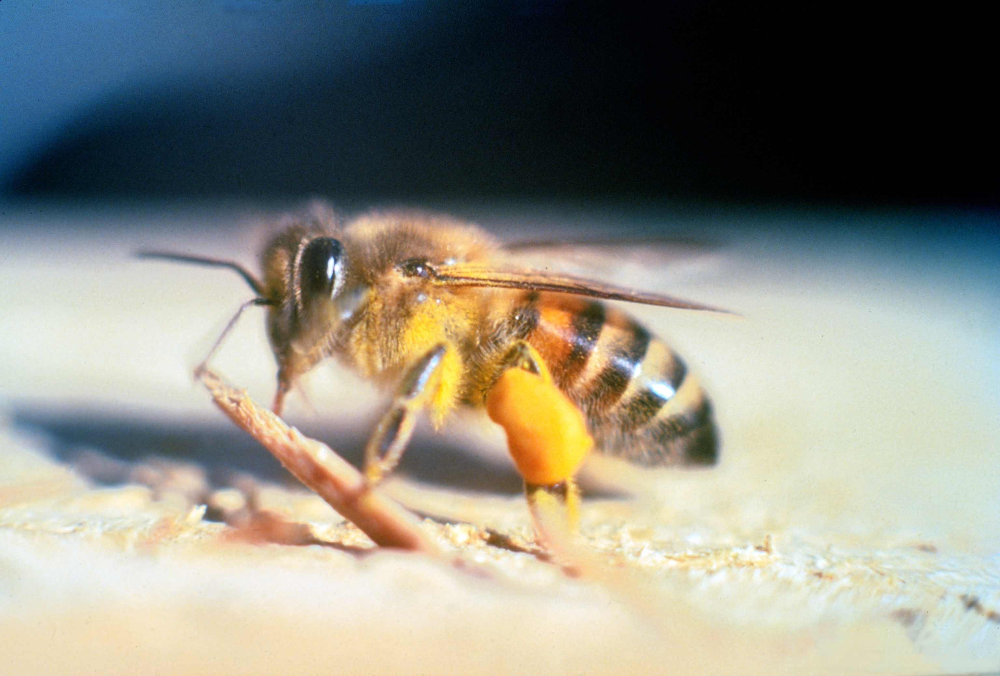

Apis mellifera scutellata, but nobody will remember that. They're from Africa.
Location:East Africa
Total Distance: 50-200 km
Notes: These bees are always on the hunt for prime realestate. Searching for wet areas with more common plantlife is what keeps them on the move.
